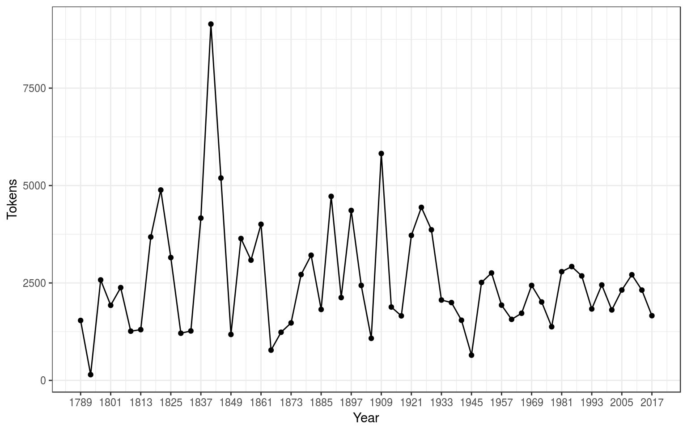

This vignette provides a basic overview of quanteda’s features and capabilities. For additional vignettes, see the articles at quanteda.io.
Since quanteda is available on CRAN, you can install by using your GUI’s R package installer, or execute:
install.packages("quanteda") See an instructions at https://github.com/kbenoit/quanteda to install the GitHub version,
The following packages work well with or extend quanteda and we recommend that you also install them:
quantedaData: Additional textual data for use with quanteda.
LIWCalike: An R implementation of the Linguistic Inquiry and Word Count approach to text analysis.
You load the package to access to functions and data in the package.
library(quanteda)quanteda has a simple and powerful companion package for loading texts: readtext. The main function in this package, readtext(), takes a file or fileset from disk or a URL, and returns a type of data.frame that can be used directly with the corpus() constructor function, to create a quanteda corpus object.
readtext() works on:
.txt) files;.csv) files;The corpus constructor command corpus() works directly on:
VCorpus corpus object from the tm package.The simplest case is to create a corpus from a vector of texts already in memory in R. This gives the advanced R user complete flexbility with his or her choice of text inputs, as there are almost endless ways to get a vector of texts into R.
If we already have the texts in this form, we can call the corpus constructor function directly. We can demonstrate this on the built-in character object of the texts about immigration policy extracted from the 2010 election manifestos of the UK political parties (called data_char_ukimmig2010).
summary(myCorpus)## Corpus consisting of 9 documents:
##
## Text Types Tokens Sentences
## BNP 1125 3280 88
## Coalition 142 260 4
## Conservative 251 499 15
## Greens 322 679 21
## Labour 298 683 29
## LibDem 251 483 14
## PC 77 114 5
## SNP 88 134 4
## UKIP 346 723 27
##
## Source: /Users/kbenoit/GitHub/quanteda/docs/articles/pkgdown/* on x86_64 by kbenoit
## Created: Thu Nov 30 18:02:49 2017
## Notes:If we wanted, we could add some document-level variables – what quanteda calls docvars – to this corpus.
We can do this using the R’s names() function to get the names of the character vector data_char_ukimmig2010, and assign this to a document variable (docvar).
summary(myCorpus)## Corpus consisting of 9 documents:
##
## Text Types Tokens Sentences Party Year
## BNP 1125 3280 88 BNP 2010
## Coalition 142 260 4 Coalition 2010
## Conservative 251 499 15 Conservative 2010
## Greens 322 679 21 Greens 2010
## Labour 298 683 29 Labour 2010
## LibDem 251 483 14 LibDem 2010
## PC 77 114 5 PC 2010
## SNP 88 134 4 SNP 2010
## UKIP 346 723 27 UKIP 2010
##
## Source: /Users/kbenoit/GitHub/quanteda/docs/articles/pkgdown/* on x86_64 by kbenoit
## Created: Thu Nov 30 18:02:49 2017
## Notes:If we wanted to tag each document with additional meta-data not considered a document variable of interest for analysis, but rather something that we need to know as an attribute of the document, we could also add those to our corpus.
summary(myCorpus, showmeta = TRUE)## Corpus consisting of 9 documents:
##
## Text Types Tokens Sentences Party Year _language
## BNP 1125 3280 88 BNP 2010 english
## Coalition 142 260 4 Coalition 2010 english
## Conservative 251 499 15 Conservative 2010 english
## Greens 322 679 21 Greens 2010 english
## Labour 298 683 29 Labour 2010 english
## LibDem 251 483 14 LibDem 2010 english
## PC 77 114 5 PC 2010 english
## SNP 88 134 4 SNP 2010 english
## UKIP 346 723 27 UKIP 2010 english
## _docsource
## data_char_ukimmig2010_1
## data_char_ukimmig2010_2
## data_char_ukimmig2010_3
## data_char_ukimmig2010_4
## data_char_ukimmig2010_5
## data_char_ukimmig2010_6
## data_char_ukimmig2010_7
## data_char_ukimmig2010_8
## data_char_ukimmig2010_9
##
## Source: /Users/kbenoit/GitHub/quanteda/docs/articles/pkgdown/* on x86_64 by kbenoit
## Created: Thu Nov 30 18:02:49 2017
## Notes:The last command, metadoc, allows you to define your own document meta-data fields. Note that in assiging just the single value of "english", R has recycled the value until it matches the number of documents in the corpus. In creating a simple tag for our custom metadoc field docsource, we used the quanteda function ndoc() to retrieve the number of documents in our corpus. This function is deliberately designed to work in a way similar to functions you may already use in R, such as nrow() and ncol().
require(readtext)
# Twitter json
myCorpusTwitter <- corpus(mytf1)
summary(myCorpusTwitter, 5)
# generic json - needs a textfield specifier
textfield = "text")
# text file
# multiple text files
# multiple text files with docvars from filenames
docvarsfrom = "filenames", sep = "-", docvarnames = c("Year", "President"))
# XML data
textfield = "COMMON")
# csv file
docvars(data_corpus_inaugural)),
file = "/tmp/inaug_texts.csv", row.names = FALSE)
A corpus is designed to be a “library” of original documents that have been converted to plain, UTF-8 encoded text, and stored along with meta-data at the corpus level and at the document-level. We have a special name for document-level meta-data: docvars. These are variables or features that describe attributes of each document.
A corpus is designed to be a more or less static container of texts with respect to processing and analysis. This means that the texts in corpus are not designed to be changed internally through (for example) cleaning or pre-processing steps, such as stemming or removing punctuation. Rather, texts can be extracted from the corpus as part of processing, and assigned to new objects, but the idea is that the corpus will remain as an original reference copy so that other analyses – for instance those in which stems and punctuation were required, such as analyzing a reading ease index – can be performed on the same corpus.
To extract texts from a a corpus, we use an extractor, called texts().
texts(data_corpus_inaugural)[2]## 1793-Washington
## "Fellow citizens, I am again called upon by the voice of my country to execute the functions of its Chief Magistrate. When the occasion proper for it shall arrive, I shall endeavor to express the high sense I entertain of this distinguished honor, and of the confidence which has been reposed in me by the people of united America.\n\nPrevious to the execution of any official act of the President the Constitution requires an oath of office. This oath I am now about to take, and in your presence: That if it shall be found during my administration of the Government I have in any instance violated willingly or knowingly the injunctions thereof, I may (besides incurring constitutional punishment) be subject to the upbraidings of all who are now witnesses of the present solemn ceremony.\n\n "To summarize the texts from a corpus, we can call a summary() method defined for a corpus.
summary(data_corpus_irishbudget2010)## Corpus consisting of 14 documents:
##
## Text Types Tokens Sentences year debate
## 2010_BUDGET_01_Brian_Lenihan_FF 1953 8641 374 2010 BUDGET
## 2010_BUDGET_02_Richard_Bruton_FG 1040 4446 217 2010 BUDGET
## 2010_BUDGET_03_Joan_Burton_LAB 1624 6393 307 2010 BUDGET
## 2010_BUDGET_04_Arthur_Morgan_SF 1595 7107 343 2010 BUDGET
## 2010_BUDGET_05_Brian_Cowen_FF 1629 6599 250 2010 BUDGET
## 2010_BUDGET_06_Enda_Kenny_FG 1148 4232 153 2010 BUDGET
## 2010_BUDGET_07_Kieran_ODonnell_FG 678 2297 133 2010 BUDGET
## 2010_BUDGET_08_Eamon_Gilmore_LAB 1181 4177 201 2010 BUDGET
## 2010_BUDGET_09_Michael_Higgins_LAB 488 1286 44 2010 BUDGET
## 2010_BUDGET_10_Ruairi_Quinn_LAB 439 1284 59 2010 BUDGET
## 2010_BUDGET_11_John_Gormley_Green 401 1030 49 2010 BUDGET
## 2010_BUDGET_12_Eamon_Ryan_Green 510 1643 90 2010 BUDGET
## 2010_BUDGET_13_Ciaran_Cuffe_Green 442 1240 45 2010 BUDGET
## 2010_BUDGET_14_Caoimhghin_OCaolain_SF 1188 4044 176 2010 BUDGET
## number foren name party
## 01 Brian Lenihan FF
## 02 Richard Bruton FG
## 03 Joan Burton LAB
## 04 Arthur Morgan SF
## 05 Brian Cowen FF
## 06 Enda Kenny FG
## 07 Kieran ODonnell FG
## 08 Eamon Gilmore LAB
## 09 Michael Higgins LAB
## 10 Ruairi Quinn LAB
## 11 John Gormley Green
## 12 Eamon Ryan Green
## 13 Ciaran Cuffe Green
## 14 Caoimhghin OCaolain SF
##
## Source: /Users/kbenoit/Dropbox (Personal)/GitHub/quanteda/* on x86_64 by kbenoit
## Created: Wed Jun 28 22:04:18 2017
## Notes:We can save the output from the summary command as a data frame, and plot some basic descriptive statistics with this information:
tokenInfo <- summary(data_corpus_inaugural)
if (require(ggplot2))
## Loading required package: ggplot2
# Longest inaugural address: William Henry Harrison
tokenInfo[which.max(tokenInfo$Tokens), ] ## Corpus consisting of 58 documents:
##
## Text Types Tokens Sentences Year President FirstName
## 1841-Harrison 1896 9144 210 1841 Harrison William Henry
##
## Source: Gerhard Peters and John T. Woolley. The American Presidency Project.
## Created: Tue Jun 13 14:51:47 2017
## Notes: http://www.presidency.ucsb.edu/inaugurals.phpThe + operator provides a simple method for concatenating two corpus objects. If they contain different sets of document-level variables, these will be stitched together in a fashion that guarantees that no information is lost. Corpus-level medata data is also concatenated.
library(quanteda)
mycorpus3 <- mycorpus1 + mycorpus2
summary(mycorpus3)## Corpus consisting of 11 documents:
##
## Text Types Tokens Sentences
## 1789-Washington 625 1538 23
## 1793-Washington 96 147 4
## 1797-Adams 826 2578 37
## 1801-Jefferson 717 1927 41
## 1805-Jefferson 804 2381 45
## 1997-Clinton 773 2449 111
## 2001-Bush 621 1808 97
## 2005-Bush 773 2319 100
## 2009-Obama 938 2711 110
## 2013-Obama 814 2317 88
## 2017-Trump 582 1660 88
##
## Source: Combination of corpuses mycorpus1 and mycorpus2
## Created: Thu Nov 30 18:02:50 2017
## Notes:There is a method of the corpus_subset() function defined for corpus objects, where a new corpus can be extracted based on logical conditions applied to docvars:
## Corpus consisting of 7 documents:
##
## Text Types Tokens Sentences Year President FirstName
## 1993-Clinton 642 1833 81 1993 Clinton Bill
## 1997-Clinton 773 2449 111 1997 Clinton Bill
## 2001-Bush 621 1808 97 2001 Bush George W.
## 2005-Bush 773 2319 100 2005 Bush George W.
## 2009-Obama 938 2711 110 2009 Obama Barack
## 2013-Obama 814 2317 88 2013 Obama Barack
## 2017-Trump 582 1660 88 2017 Trump Donald J.
##
## Source: Gerhard Peters and John T. Woolley. The American Presidency Project.
## Created: Tue Jun 13 14:51:47 2017
## Notes: http://www.presidency.ucsb.edu/inaugurals.php## Corpus consisting of 2 documents:
##
## Text Types Tokens Sentences Year President FirstName
## 1797-Adams 826 2578 37 1797 Adams John
## 1825-Adams 1003 3152 74 1825 Adams John Quincy
##
## Source: Gerhard Peters and John T. Woolley. The American Presidency Project.
## Created: Tue Jun 13 14:51:47 2017
## Notes: http://www.presidency.ucsb.edu/inaugurals.phpThe kwic function (keywords-in-context) performs a search for a word and allows us to view the contexts in which it occurs:
kwic(data_corpus_inaugural, "terror")##
## [1797-Adams, 1325] fraud or violence, by | terror |
## [1933-Roosevelt, 112] nameless, unreasoning, unjustified | terror |
## [1941-Roosevelt, 287] seemed frozen by a fatalistic | terror |
## [1961-Kennedy, 866] alter that uncertain balance of | terror |
## [1981-Reagan, 813] freeing all Americans from the | terror |
## [1997-Clinton, 1055] They fuel the fanaticism of | terror |
## [1997-Clinton, 1655] maintain a strong defense against | terror |
## [2009-Obama, 1632] advance their aims by inducing | terror |
##
## , intrigue, or venality
## which paralyzes needed efforts to
## , we proved that this
## that stays the hand of
## of runaway living costs.
## . And they torment the
## and destruction. Our children
## and slaughtering innocents, we##
## [1797-Adams, 1325] fraud or violence, by | terror
## [1933-Roosevelt, 112] nameless, unreasoning, unjustified | terror
## [1941-Roosevelt, 287] seemed frozen by a fatalistic | terror
## [1961-Kennedy, 866] alter that uncertain balance of | terror
## [1961-Kennedy, 990] of science instead of its | terrors
## [1981-Reagan, 813] freeing all Americans from the | terror
## [1981-Reagan, 2196] understood by those who practice | terrorism
## [1997-Clinton, 1055] They fuel the fanaticism of | terror
## [1997-Clinton, 1655] maintain a strong defense against | terror
## [2009-Obama, 1632] advance their aims by inducing | terror
## [2017-Trump, 1117] civilized world against radical Islamic | terrorism
##
## | , intrigue, or venality
## | which paralyzes needed efforts to
## | , we proved that this
## | that stays the hand of
## | . Together let us explore
## | of runaway living costs.
## | and prey upon their neighbors
## | . And they torment the
## | and destruction. Our children
## | and slaughtering innocents, we
## | , which we will eradicate
kwic(data_corpus_inaugural, "communist*")##
## [1949-Truman, 834] the actions resulting from the | Communist |
## [1961-Kennedy, 519] -- not because the | Communists |
##
## philosophy are a threat to
## may be doing it,In the above summary, Year and President are variables associated with each document. We can access such variables with the docvars() function.
# inspect the document-level variables
head(docvars(data_corpus_inaugural))## Year President FirstName
## 1789-Washington 1789 Washington George
## 1793-Washington 1793 Washington George
## 1797-Adams 1797 Adams John
## 1801-Jefferson 1801 Jefferson Thomas
## 1805-Jefferson 1805 Jefferson Thomas
## 1809-Madison 1809 Madison James# inspect the corpus-level metadata
metacorpus(data_corpus_inaugural)## $source
## [1] "Gerhard Peters and John T. Woolley. The American Presidency Project."
##
## $notes
## [1] "http://www.presidency.ucsb.edu/inaugurals.php"
##
## $created
## [1] "Tue Jun 13 14:51:47 2017"More corpora are available from the quantedaData package.
In order to perform statistical analysis such as document scaling, we must extract a matrix associating values for certain features with each document. In quanteda, we use the dfm function to produce such a matrix. “dfm” is short for document-feature matrix, and always refers to documents in rows and “features” as columns. We fix this dimensional orientation because is is standard in data analysis to have a unit of analysis as a row, and features or variables pertaining to each unit as columns. We call them “features” rather than terms, because features are more general than terms: they can be defined as raw terms, stemmed terms, the parts of speech of terms, terms after stopwords have been removed, or a dictionary class to which a term belongs. Features can be entirely general, such as ngrams or syntactic dependencies, and we leave this open-ended.
To simply tokenize a text, quanteda provides a powerful command called tokens(). This produces an intermediate object, consisting of a list of tokens in the form of character vectors, where each element of the list corresponds to an input document.
tokens() is deliberately conservative, meaning that it does not remove anything from the text unless told to do so.
txt <- c(text1 = "This is $10 in 999 different ways,\n up and down; left and right!",
text2 = "@kenbenoit working: on #quanteda 2day\t4ever, http://textasdata.com?page=123.")
tokens(txt)## tokens from 2 documents.
## text1 :
## [1] "This" "is" "$" "10" "in"
## [6] "999" "different" "ways" "," "up"
## [11] "and" "down" ";" "left" "and"
## [16] "right" "!"
##
## text2 :
## [1] "@kenbenoit" "working" ":" "on"
## [5] "#quanteda" "2day" "4ever" ","
## [9] "http" ":" "/" "/"
## [13] "textasdata.com" "?" "page" "="
## [17] "123" "."## tokens from 2 documents.
## text1 :
## [1] "This" "is" "in" "different" "ways"
## [6] "up" "and" "down" "left" "and"
## [11] "right"
##
## text2 :
## [1] "@kenbenoit" "working" "on" "#quanteda"
## [5] "2day" "4ever" "http" "textasdata.com"
## [9] "page"## tokens from 2 documents.
## text1 :
## [1] "This" "is" "10" "in" "999"
## [6] "different" "ways" "up" "and" "down"
## [11] "left" "and" "right"
##
## text2 :
## [1] "@kenbenoit" "working" "on" "#quanteda"
## [5] "2day" "4ever" "http" "textasdata.com"
## [9] "page" "123"## tokens from 2 documents.
## text1 :
## [1] "This" "is" "$" "in" "different"
## [6] "ways" "," "up" "and" "down"
## [11] ";" "left" "and" "right" "!"
##
## text2 :
## [1] "@kenbenoit" "working" ":" "on"
## [5] "#quanteda" "2day" "4ever" ","
## [9] "http" ":" "/" "/"
## [13] "textasdata.com" "?" "page" "="
## [17] "."## tokens from 2 documents.
## text1 :
## [1] "This" "is" "$" "10" "in"
## [6] "999" "different" "ways" "," "up"
## [11] "and" "down" ";" "left" "and"
## [16] "right" "!"
##
## text2 :
## [1] "@kenbenoit" "working" ":" "on"
## [5] "#quanteda" "2day" "4ever" ","
## [9] "http" ":" "/" "/"
## [13] "textasdata.com" "?" "page" "="
## [17] "123" "."## tokens from 2 documents.
## text1 :
## [1] "This" " " "is" " " "$"
## [6] "10" " " "in" " " "999"
## [11] " " "different" " " "ways" ","
## [16] "\n" " " "up" " " "and"
## [21] " " "down" ";" " " "left"
## [26] " " "and" " " "right" "!"
##
## text2 :
## [1] "@kenbenoit" " " "working" ":"
## [5] " " "on" " " "#quanteda"
## [9] " " "2day" "\t" "4ever"
## [13] "," " " "http" ":"
## [17] "/" "/" "textasdata.com" "?"
## [21] "page" "=" "123" "."We also have the option to tokenize characters:
## tokens from 1 document.
## text1 :
## [1] "G" "r" "e" "a" "t" "w" "e" "b" "s" "i" "t" "e" ":" "h" "t" "t" "p"
## [18] ":" "/" "/" "t" "e" "x" "t" "a" "s" "d" "a" "t" "a" "." "c" "o" "m"
## [35] "?" "p" "a" "g" "e" "=" "1" "2" "3" "."
remove_separators = FALSE)## tokens from 1 document.
## text1 :
## [1] "G" "r" "e" "a" "t" " " "w" "e" "b" "s" "i" "t" "e" ":" " " "h" "t"
## [18] "t" "p" ":" "/" "/" "t" "e" "x" "t" "a" "s" "d" "a" "t" "a" "." "c"
## [35] "o" "m" "?" "p" "a" "g" "e" "=" "1" "2" "3" "."and sentences:
# sentence level
"Today is Thursday in Canberra: It is yesterday in London.",
"En el caso de que no puedas ir con ellos, ¿quieres ir con nosotros?"),
what = "sentence")## tokens from 3 documents.
## text1 :
## [1] "Kurt Vongeut said; only assholes use semi-colons."
##
## text2 :
## [1] "Today is Thursday in Canberra: It is yesterday in London."
##
## text3 :
## [1] "En el caso de que no puedas ir con ellos, ¿quieres ir con nosotros?"Tokenizing texts is an intermediate option, and most users will want to skip straight to constructing a document-feature matrix. For this, we have a Swiss-army knife function, called dfm(), which performs tokenization and tabulates the extracted features into a matrix of documents by features. Unlike the conservative approach taken by tokens(), the dfm() function applies certain options by default, such as toLower() – a separate function for lower-casing texts – and removes punctuation. All of the options to tokens() can be passed to dfm(), however.
# make a dfm
myDfm <- dfm(myCorpus)
myDfm[, 1:5]## Document-feature matrix of: 7 documents, 5 features (0% sparse).
## 7 x 5 sparse Matrix of class "dfm"
## features
## docs my fellow citizens , today
## 1993-Clinton 7 5 2 139 10
## 1997-Clinton 6 7 7 131 5
## 2001-Bush 3 1 9 110 2
## 2005-Bush 2 3 6 120 3
## 2009-Obama 2 1 1 130 6
## 2013-Obama 3 3 6 99 4
## 2017-Trump 1 1 4 96 4Other options for a dfm() include removing stopwords, and stemming the tokens.
# make a dfm, removing stopwords and applying stemming
myStemMat[, 1:5]## Document-feature matrix of: 7 documents, 5 features (17.1% sparse).
## 7 x 5 sparse Matrix of class "dfm"
## features
## docs fellow citizen today celebr mysteri
## 1993-Clinton 5 2 10 4 1
## 1997-Clinton 7 8 6 1 0
## 2001-Bush 1 10 2 0 0
## 2005-Bush 3 7 3 2 0
## 2009-Obama 1 1 6 2 0
## 2013-Obama 3 8 6 1 0
## 2017-Trump 1 4 5 3 1The option remove provides a list of tokens to be ignored. Most users will supply a list of pre-defined “stop words”, defined for numerous languages, accessed through the stopwords() function:
## [1] "i" "me" "my" "myself" "we"
## [6] "our" "ours" "ourselves" "you" "your"
## [11] "yours" "yourself" "yourselves" "he" "him"
## [16] "his" "himself" "she" "her" "hers"## [1] "и" "в" "во" "не" "что" "он" "на" "я" "с" "со"## [1] "فى" "في" "كل" "لم" "لن" "له" "من" "هو" "هي" "قوة"The dfm can be inspected in the Enviroment pane in RStudio, or by calling R’s View function. Calling plot on a dfm will display a wordcloud using the wordcloud package
mydfm## Document-feature matrix of: 9 documents, 1,547 features (83.8% sparse).To access a list of the most frequently occurring features, we can use topfeatures():
## immigration british people asylum britain uk
## 66 37 35 29 28 27
## system population country new immigrants ensure
## 27 21 20 19 17 17
## shall citizenship social national bnp illegal
## 17 16 14 14 13 13
## work percent
## 13 12Plotting a word cloud is done using textplot_wordcloud(), for a dfm class object. This function passes arguments through to wordcloud() from the wordcloud package, and can prettify the plot using the same arguments:
set.seed(100)
rot.per = .25,
Often, we are interested in analysing how texts differ according to substantive factors which may be encoded in the document variables, rather than simply by the boundaries of the document files. We can group documents which share the same value for a document variable when creating a dfm:
We can sort this dfm, and inspect it:
## Document-feature matrix of: 5 documents, 10 features (0% sparse).
## 5 x 10 sparse Matrix of class "dfm"
## features
## docs people budget government public minister tax economy pay jobs
## FF 23 44 47 65 11 60 37 41 41
## FG 78 71 61 47 62 11 20 29 17
## LAB 69 66 36 32 54 47 37 24 20
## SF 81 53 73 31 39 34 50 24 27
## Green 15 26 19 4 4 11 16 4 15
## features
## docs billion
## FF 32
## FG 21
## LAB 34
## SF 29
## Green 3Note that the most frequently occurring feature is “will”, a word usually on English stop lists, but one that is not included in quanteda’s built-in English stopword list.
For some applications we have prior knowledge of sets of words that are indicative of traits we would like to measure from the text. For example, a general list of positive words might indicate positive sentiment in a movie review, or we might have a dictionary of political terms which are associated with a particular ideological stance. In these cases, it is sometimes useful to treat these groups of words as equivalent for the purposes of analysis, and sum their counts into classes.
For example, let’s look at how words associated with terrorism and words associated with the economy vary by President in the inaugural speeches corpus. From the original corpus, we select Presidents since Clinton:
Now we define a demonstration dictionary:
economy = c("jobs", "business", "grow", "work")))We can use the dictionary when making the dfm:
byPresMat## Document-feature matrix of: 7 documents, 2 features (14.3% sparse).
## 7 x 2 sparse Matrix of class "dfm"
## features
## docs terror economy
## 1993-Clinton 0 8
## 1997-Clinton 1 8
## 2001-Bush 0 4
## 2005-Bush 1 6
## 2009-Obama 1 10
## 2013-Obama 1 6
## 2017-Trump 1 5The constructor function dictionary() also works with two common “foreign” dictionary formats: the LIWC and Provalis Research’s Wordstat format. For instance, we can load the LIWC and apply this to the Presidential inaugural speech corpus:
format = "LIWC")
liwcdfm[, 1:10]
margin = "documents", method = "cosine")
obamaSimil## 2009-Obama 2013-Obama
## 2009-Obama 1.0000000 0.6815711
## 2013-Obama 0.6815711 1.0000000
## 1981-Reagan 0.6229949 0.6376412
## 1985-Reagan 0.6434472 0.6629428
## 1989-Bush 0.6253944 0.5784290
## 1993-Clinton 0.6280946 0.6265428
## 1997-Clinton 0.6593018 0.6466030
## 2001-Bush 0.6018113 0.6193608
## 2005-Bush 0.5266249 0.5867178
## 2017-Trump 0.5192075 0.5160104# dotchart(as.list(obamaSimil)$"2009-Obama", xlab = "Cosine similarity")We can use these distances to plot a dendrogram, clustering presidents:
data(data_corpus_SOTU, package = "quantedaData")
stem = TRUE, remove_punct = TRUE,
# hierarchical clustering - get distances on normalized dfm
# hiarchical clustering the distance object
presCluster <- hclust(presDistMat)
# label with document names
# plot as a dendrogram
plot(presCluster, xlab = "", sub = "", main = "Euclidean Distance on Normalized Token Frequency")(try it!)
We can also look at term similarities:
sim <- textstat_simil(presDfm, c("fair", "health", "terror"), method = "cosine", margin = "features")
lapply(as.list(sim), head, 10)## $fair
## economi begin jefferson author faith call struggl
## 0.9080252 0.9075951 0.8981462 0.8944272 0.8866586 0.8608285 0.8451543
## best creat courag
## 0.8366600 0.8347300 0.8326664
##
## $health
## shape generat wrong common knowledg planet task
## 0.9045340 0.8971180 0.8944272 0.8888889 0.8888889 0.8819171 0.8728716
## demand eye defin
## 0.8666667 0.8660254 0.8642416
##
## $terror
## potenti adversari commonplac miracl racial bounti
## 0.9036961 0.9036961 0.8944272 0.8944272 0.8944272 0.8944272
## martin dream polit guarante
## 0.8944272 0.8624394 0.8500000 0.8485281We have a lot of development work to do on the textmodel() function, but here is a demonstration of unsupervised document scaling comparing the “wordfish” model:
# make prettier document names
ieDfm <- dfm(data_corpus_irishbudget2010)
## Fitted wordfish model:
## Call:
## textmodel_wordfish.dfm(x = ieDfm, dir = c(2, 1))
##
## Estimated document positions:
##
## Documents theta SE lower
## 1 2010_BUDGET_01_Brian_Lenihan_FF 1.8209508 0.02032339 1.78111696
## 2 2010_BUDGET_02_Richard_Bruton_FG -0.5932799 0.02818843 -0.64852921
## 3 2010_BUDGET_03_Joan_Burton_LAB -1.1136781 0.01540263 -1.14386721
## 4 2010_BUDGET_04_Arthur_Morgan_SF -0.1219298 0.02846327 -0.17771776
## 5 2010_BUDGET_05_Brian_Cowen_FF 1.7724206 0.02364088 1.72608450
## 6 2010_BUDGET_06_Enda_Kenny_FG -0.7145794 0.02650264 -0.76652462
## 7 2010_BUDGET_07_Kieran_ODonnell_FG -0.4844831 0.04171488 -0.56624422
## 8 2010_BUDGET_08_Eamon_Gilmore_LAB -0.5616691 0.02967367 -0.61982947
## 9 2010_BUDGET_09_Michael_Higgins_LAB -0.9703122 0.03850560 -1.04578314
## 10 2010_BUDGET_10_Ruairi_Quinn_LAB -0.9589244 0.03892392 -1.03521530
## 11 2010_BUDGET_11_John_Gormley_Green 1.1807221 0.07221446 1.03918174
## 12 2010_BUDGET_12_Eamon_Ryan_Green 0.1866469 0.06294125 0.06328207
## 13 2010_BUDGET_13_Ciaran_Cuffe_Green 0.7421921 0.07245427 0.60018178
## 14 2010_BUDGET_14_Caoimhghin_OCaolain_SF -0.1840767 0.03666272 -0.25593563
## upper
## 1 1.86078463
## 2 -0.53803055
## 3 -1.08348891
## 4 -0.06614175
## 5 1.81875675
## 6 -0.66263426
## 7 -0.40272189
## 8 -0.50350867
## 9 -0.89484119
## 10 -0.88263355
## 11 1.32226243
## 12 0.31001176
## 13 0.88420251
## 14 -0.11221778
##
## Estimated feature scores: showing first 30 beta-hats for features
##
## when i presented the
## -0.09920582 0.38802103 0.39879026 0.25594171
## supplementary budget to this
## 1.11586153 0.09915222 0.37007666 0.30693315
## house last april ,
## 0.19906838 0.28971551 -0.09526389 0.34535046
## said we could work
## -0.71931203 0.47992082 -0.52976630 0.58227154
## our way through period
## 0.74373224 0.33611377 0.65982578 0.55621627
## of severe economic distress
## 0.33932073 1.27910594 0.47866875 1.84454594
## . today can report
## 0.27352366 0.17419592 0.36378352 0.69175996
## that notwithstanding
## 0.08833325 1.84454594quanteda makes it very easy to fit topic models as well, e.g.:
quantdfm <- dfm(data_corpus_irishbudget2010,
quantdfm## Document-feature matrix of: 14 documents, 1,279 features (64.6% sparse).
if (require(topicmodels)) {
get_terms(myLDAfit20, 5)
}## Loading required package: topicmodels## Topic 1 Topic 2 Topic 3 Topic 4 Topic 5 Topic 6
## [1,] "child" "taoiseach" "welfare" "scheme" "levy" "support"
## [2,] "private" "kind" "system" "million" "million" "million"
## [3,] "bank" "debate" "fianna" "tourism" "carbon" "welfare"
## [4,] "real" "employees" "taxation" "reduced" "change" "employment"
## [5,] "debt" "rate" "earners" "pension" "welfare" "back"
## Topic 7 Topic 8 Topic 9 Topic 10 Topic 11 Topic 12
## [1,] "citizenship" "benefit" "fianna" "taoiseach" "fianna" "care"
## [2,] "alternative" "fáil" "fáil" "fine" "fáil" "welfare"
## [3,] "yesterday" "know" "national" "gael" "side" "workers"
## [4,] "wealth" "day" "irish" "may" "societies" "benefit"
## [5,] "adjustment" "irish" "support" "irish" "third" "families"
## Topic 13 Topic 14 Topic 15 Topic 16 Topic 17
## [1,] "failed" "measures" "hospital" "society" "million"
## [2,] "strategy" "review" "child" "enterprising" "measures"
## [3,] "needed" "system" "fianna" "sense" "spending"
## [4,] "ministers" "contribution" "measures" "equal" "welfare"
## [5,] "system" "reduction" "per" "nation" "reduce"
## Topic 18 Topic 19 Topic 20
## [1,] "child" "confidence" "stimulus"
## [2,] "today" "reductions" "government's"
## [3,] "society" "investment" "nothing"
## [4,] "banks" "even" "fáil"
## [5,] "per" "enterprise" "deficit"